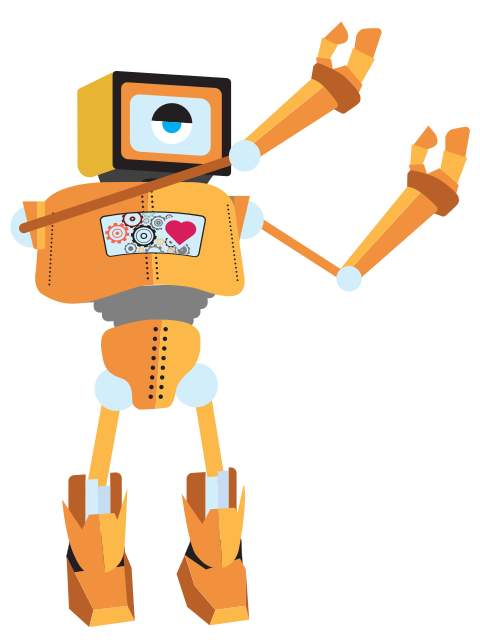

Rapunzel web application
-
2015
-
TECHNOLOGIES
HTML, CSS, JS, Adobe CS
-
DELIVERABLES
Web Application / UI Elements
-
FOCUS ON
Team project: UI design & CSS animation
An interactive web experience based on the reimagining of the 1812 version of Rapunzel by the Brothers Grimm set in a retro-futurist universe.Stylistically, the drivers for interpretation were going to be Brutalist architecture, Art Deco poster art, and reference to the feel and colour scheme of Stanley Kubrick’s A Clockwork Orange. This was a team project wher I designed the concept and UI elements and did some of the CSS animation.
- 